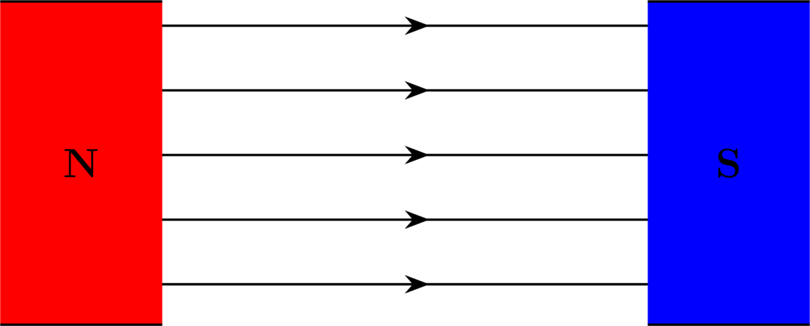
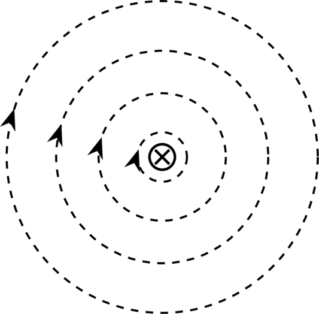

Magnetic circuits#
So we have seen that the current in a coil of wire wrapped around a core produces a magnetic flux in the core \(\Phi\)\
As shown in Table 3, the magnetic circuit is analogous to the electric circuit.

Fig. 2 Magnetic core with coil.#
Electric Circuit |
Magnetic Circuit |
|---|---|
Ohm’s law |
Analogous to Ohm’s law |
\(V = I\cdot R\) |
\(\mathcal{F} = \Phi \mathcal{R}\) |
\(V\) = electromotive force (emf) |
\(\mathcal{F}\) = magnetomotive force (mmf) \((NI)\) |
Energy Losses in a Ferromagnetic core#
The main losses in electromagnetic processes are:
Hysteresis loss
Eddy current loss
In this lecture we will understand the losses, and in later lectures we will investigate how to model them
Faraday’s law of electromagnetic induction#
Faradays law of electromagentic induction states the fundamental relationship between voltage and flux in a circuit
If the flux linking a loop (or turn) varies as a function of time, a voltage is induced between its terminals
The value of the induced voltage is proportional to the rate of change of flux
Described by
where
emf = electromotove force -induced voltage [V]
N = Number of turns in the coil
\(\Delta \Phi\) = change of flux inside the coil [Wb]
\(\Delta t\) = time interval during which the flux changes [s]
Voltage induced in a conductor#
Easier to calculate length of conductors than whenever a concuctor cuts a magnetic field
where
emf = electromotive force -induced voltage [V]
B = flux density [T]
l = active length of the conductor in the magnetic field [m]
v = relative speed of the conductor [m/s]
Lorentz force on conductor#
where
emf = electromotove force -induced voltage [V]
B = flux density [T]
l = active length of the conductor [m]
I = current in the conductor [A]

Fig. 3 Magnetic force between North and South pole in a magnet#

Direction of the force acting on a straight conductor#
A current carrying conductor in a magnetic field will assert a force.
The force is given by how the magnetic field lines aligns itself
Magnetic field lines goes out of the North pole and into the South pole
A cross gives the direction of current going into the page. According to Maxwells right hand rule (corkscrew) the circular lines of force are given in (a)
Yet magnetic field lines will never cross each other, but align up in such a manner that the magnetic field above the conductor will add, and the magnetic field beneth the conductor will cancel each other out, so that in the end there is more magnetic field lines above.
The force excelled on the conductor is going down.
{kind=link}

Fig. 4 The right hand rule when current goes into the page#


Fig. 5 The magnetic fields combined#

Fig. 6 The sum of the magnetic fields excells a Lorents force#